Auster enfurece a Erdogan
Wed, 15 Feb 2012 06:59:11 +0000
Con motivo de la publicación de su más reciente (y muy esperado) libro, Diario de invierno, el escritor estadounidense Paul Auster ha estado planeando su gira mundial. Auster cuenta con lectores por todo el mundo, y su presencia será bienvenida allá por donde pase. Sin embargo, hay dos lugares donde ha dejado muy claro que [...]

Con motivo de la publicación de su más reciente (y muy esperado) libro, Diario de invierno, el escritor estadounidense Paul Auster ha estado planeando su gira mundial. Auster cuenta con lectores por todo el mundo, y su presencia será bienvenida allá por donde pase. Sin embargo, hay dos lugares donde ha dejado muy claro que no realizará presentaciones, debido a su actitud represiva respecto a escritores y periodistas: China y Turquía.
Aunque Turquía es uno de los países más populares de Oriente Medio, por su economía en desarrollo, su identidad musulmana o incluso su régimen democrático, la realidad es que se trata de un país donde hay encarcelados más de 100 periodistas y autores, todos conocidos por ser críticos con el sistema de gobierno del presidente Recep Tayyip Erdogan. A muchos de los encarcelados se les acusa de colaborar con grupos separatistas kurdos, pero es difícil negar que varios de estos nombres pertenecen a escritores y reporteros de reconocida valía a nivel internacional. La mayoría ni siquiera han sido condenados todavía, y debido al lentísimo ritmo de la justicia turca podrían pasar todavía mucho tiempo en prisión a la espera de juicio. El presidente turco, no obstante, se ha tomado la decisión de Auster como una afrenta personal, llegando a defenderse en un encuentro oficial con los miembros de su partido; Erdogan no entiende la actitud del escritor, niega que los encarcelados estén privados de su libertad por motivos políticos, y acusa al autor de Brooklyn de hipócrita, ya que no muestra escrúpulos a la hora de visitar Israel, país que, según Erdogan es una “auténtica teocracia”. La respuesta de Auster no se ha hecho esperar: “piense lo que piense el Presidente del estado de Israel, el hecho es que allí hay libertad de expresión y no se encarcela a los escritores y periodistas”.
Lo más sorprendente de todo esto no es la actitud de Auster, que ha sido en todo momento respetuosa y tranquila, sino la indignación del presidente turco que ha convertido el asunto en noticia internacional. Da mucho que pensar que un escritor, de una procedencia totalmente distinta y lejana de la del primer ministro, tenga la capacidad de soliviantar de tal manera a nada menos que al jefe de estado de un país. Erdogan se burló del escritor preguntándole si acaso Turquía perdería su prestigio si Auster no acudiera a presentar su libro, pero los analistas concluyen que en efecto, la decisión del escritor de evitar este país y las débiles excusas al respecto de Erdogan pueden debilitar de manera significativa la imagen del país frente a la prensa y política internacional, poniéndolo de nuevo en el eterno punto de mira de una Europa celosa de los derechos humanos. Por otro lado, los propios turcos deben de sentirse muy decepcionados, ya que el escritor estadounidense goza de su admiración: 26 de sus libros están traducidos al turco y la presencia del autor de Diario de invierno sería un valioso aporte para sus lectores.
Leer es sexy
Mon, 13 Feb 2012 07:00:36 +0000
Se acerca San Valentín y seguro que muchos de vosotros estáis buscando ya el libro idóneo para regalar a vuestra pareja. Eso está muy bien. Regalar libros siempre es bueno, pero sobre todo en fechas relacionadas con el amor, y os diré por qué: Escribir es sexy. Aunque la RAE le quite todo lo sexy [...]

Se acerca San Valentín y seguro que muchos de vosotros estáis buscando ya el libro idóneo para regalar a vuestra pareja. Eso está muy bien. Regalar libros siempre es bueno, pero sobre todo en fechas relacionadas con el amor, y os diré por qué: Escribir es sexy.
Aunque la RAE le quite todo lo sexy a lo sexy diciendo que hay que escribirlo como sexi, creo que es hora de reclamar a la lectura una de sus características más evidentes y que siglos de endiosamiento cultural nos impiden reconocer abiertamente: leer convierte a las personas en más atractivas. De verdad. Es cierto.
No hablo ya de leer libros romanticones, como los de Moccia, o románticos, como los de Nora Roberts. Tampoco hace falta que os aprendáis de memoria largos versos dedicados al amor para susurrarlos al oído de vuestros amantes (aunque, qué queréis que os diga, si sois capaces de decir de corrido y bien entonados unos versos de Baudelaire:
¡Oh vellón, que rizándose baja hasta la cintura!
¡Oh bucles! ¡Oh perfume cargado de indolencia!
¡Éxtasis! Porque broten en esta oscura alcoba
Los recuerdos dormidos en esa cabellera,
La quiero hoy agitar, cual si un pañuelo fuese.
Languidecientes asias y áfricas abrasadas,
Todo un mundo lejano, ausente, casi muerto,
Habita tus abismos, ¡arboleda aromática!
Tal como otros espíritus se pierden en la música,
El mío, ¡oh mi querida!, navega en tu perfume.
os aseguro que algo de crédito os habréis ganado). Pero no, no es eso a lo que me refiero. No hace falta ser un lector versado en el amor, ni pasar largas horas leyendo sobre romances imposibles. Nada de eso es necesario, ya que hay pocas cosas más sexys que ver a alguien leyendo por puro placer hedonista, recostado en banco, acurrucado en el sofá o mordisqueando un bolígrafo en la biblioteca.
Y es que leer dice mucho de la persona. Quiere decir que posee una mente curiosa, imaginativa, despierta, capaz de imaginar mundos y de pasar horas en el séptimo cielo gracias a algo tan sencillo como un buen libro. También leer es pasión. No tienes más que preguntar a un lector por su libro favorito para darte cuenta de que los que más leen son también, en el fondo, los más apasionados.
Basta ya de esos mitos absurdos sobre la lectura creados por aquellos que no son capaces de leer dos párrafos seguidos sin que se les descoyunte la mandíbula de tanto bostezar y que pasan más horas haciendo músculos en el gimnasio que delante de un libro. Que se acabe ya la idea de que por leer eres más torpe o poco social y que si lees eres un bicho raro. Los bichos raros son ellos, los que no leen, los que desprecian el placer de las palabras y prefieren pasar el rato embobados delante de la telebasura.
Así que ya lo sabéis, leer es sexy. Tenedlo en cuenta y mostrad orgullosos y orgullosas vuestros libros de tapa dura, los ereaders de última generación y esas gafitas negras para ver mejor de cerca que os hacen tan, tan atractivas.
Servicio completo. Un escandaloso tributo a la vida sexual de las grandes estrellas de Hollywood
Sat, 11 Feb 2012 07:00:26 +0000
Puede que el nombre de Scotty Bowers no sea tan conocido como el de Katherine Hepburn, Cary Grant o Errol Flynn, pero en la época dorada de Hollywood era un personaje célebre, si bien sólo en las más altas esferas del cine estadounidense. Bowers era un ex-marine que trabajaba en una gasolinera, desde donde llevaba [...]
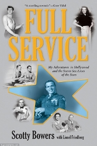
Puede que el nombre de Scotty Bowers no sea tan conocido como el de Katherine Hepburn, Cary Grant o Errol Flynn, pero en la época dorada de Hollywood era un personaje célebre, si bien sólo en las más altas esferas del cine estadounidense. Bowers era un ex-marine que trabajaba en una gasolinera, desde donde llevaba un lucrativo negocio que consistía, básicamente, en acostarse con las estrellas o procurarles compañeros o compañeras sexuales.
Ahora que la mayoría de sus clientes y amigos han fallecido, Bowers se ha atrevido a contar su historia en el libro Full Service, que cuenta con el apoyo, nada menos, del legendario Gore Vidal. En un mundo en el que abundaba la homosexualidad y bisexualidad, pero donde se firmaban cláusulas “morales” en los contratos con las grandes productoras cinematográficas, los grandes del cine no tenían más remedio que buscar parejas a través de intermediarios como Bowers, quien asegura que todo empezó cuando Walter Pidgeon, protagonista de Qué verde era mi valle, lo “descubrió” en la gasolinera y le ofreció 20 dólares de aquel entonces para regresar con él a su mansión. Bowers tuvo relaciones con Pidgeon y con el novio de éste, ambos casados, que le rogaron que mantuviera la experiencia en secreto. Así lo hizo, pero Pidgeon se encargó de que sus amigos más influyentes conocieran la existencia de este joven apuesto y discreto. Poco a poco, Bowers recibía más y más visitas, no sólo de actores que buscaban acostarse con él, sino de actrices secretamente lesbianas que buscaban amantes y sabían que Bowers se las podía procurar (el propio Bowers cuenta que acudía para ello a sus amigos ex-marines y a sus novias, pero que nunca aceptó dinero por este tipo de servicio, sólo por prostituirse él mismo) e incluso estrellas heterosexuales que buscaban cierto tipo de persona o simplemente tener una aventura lejos de un matrimonio sin vida, a menudo de conveniencia o impuesto por sus agentes y productoras.
Algunos de los grandes nombres que aparecen en el muy detallado libro de Bowers son Errol Flynn, de quien cuenta que se emborrachaba y se quedaba dormido antes de consumar con las señoritas que el ex-marine le procuraba. Asegura que se acostó con Vivien Leigh y que le conseguía amantes a Rock Hudson, a Tennessee Williams y a Laurence Olivier, entre muchos otros. Pero seguramente su afirmación más escandalosa es la que se refiere a Eduardo VII, el rey británico que abdicó para casarse con la estadounidense Wallis Simpson. Según Bowers, ambos eran homosexuales, y el matrimonio era la tapadera perfecta para poder disfrutar, él con amantes masculinos y ella con amantes femeninas. Al igual que la pareja predilecta de Hollywood, Spencer Tracy y Katherine Hepburn.
Bowers asegura que disfrutaba del dinero, pero que lo mejor era, de hecho, el sexo. No abandonó sus costumbres hasta bien entrados los años 80, cuando el miedo al SIDA recorría el globo. Ya un anciano, recuerda aquellos tiempos con cariño y nostalgia; lo que opinarían sus amigos y clientes de este libro es algo que nunca sabremos.
Guía básica para eReaders
Thu, 09 Feb 2012 07:00:55 +0000
¿Qué es un eReader? Hace más de dos años que comenzamos a explicar qué era un lector de libros electrónicos, con todas sus ventajas y desventajas. Con el boom de nuevos modelos y marcas creo que es necesario volver a hablar de estos dispositivos. En cuanto a los ebooks, libros electrónicos, parece que es un [...]
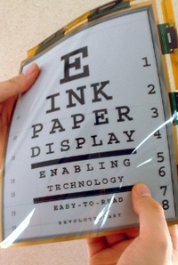
¿Qué es un eReader? Hace más de dos años que comenzamos a explicar qué era un lector de libros electrónicos, con todas sus ventajas y desventajas. Con el boom de nuevos modelos y marcas creo que es necesario volver a hablar de estos dispositivos.
En cuanto a los ebooks, libros electrónicos, parece que es un concepto ya asumido por la mayoría de la gente. Lo único a comentar sería su diversidad de formatos, algo importante a la hora de elegir luego un eReader u otro.
¿ePub, AZW, fb2? Son los formatos más comunes a la hora de trabajar con ebooks. AZW (y su versión libre, el .mobi) son los usados por el superventas de las navidades pasadas, el Kindle de Amazon. El fb2 es el elegido por el modelo español Papyre y el ePub es un estándar usado por la práctica mayoría de las tiendas de ebooks en España, casi siempre con DRM.
¿Qué es el DRM? El DRM es una protección que imponen las editoriales a sus libros y limita las copias que podemos usar y los dispositivos en los que se puede leer un ebook. Tanto el Kindle de Amazon como la mayoría de ePub de Libranda llevan DRM.
Hay que tener claro un concepto: los libros electrónicos se pueden leer en numerosos dipositivos, desde smartphones a ordenadores de mesa, pasando por tabletas o eReaders. Otra cosa es que los eReaders están diseñados y construidos específicamente para leer ebooks, por lo que presentan características únicas, como su tinta electrónica -que no cansa la vista- y su larga duración de la batería -en muchos casos, hasta un mes-.
Con el auge del mercado de libros electrónicos se han puesto a la venta numerosos dispositivos con pantallas TFT retroiluminadas dentro de la clasificación de eReaders cuando en realidad son tabletas -normalmente de gama baja- que, entre otras cosas, pueden leer libros electrónicos, pero que no comparten las características que hemos mencionado antes, siendo gadgets con una resolución bastante baja, más pesados y con una batería más cercana a las horas de uso que a los días.
Esto no quiere decir que sean malos productos, pero lo que sí hacen es generar confusión entre lo que es un dispositivo dedicado por completo a lectura con otro que puede mostrar los libros, pero de una manera muy diferente. A partir de ahí, que cada uno decida qué le interesa más, si un gadget dedicado u otro más enfocado al multimedia.
Además, claro, están las tabletas de gama alta, cuyas características son mucho más evidentes y no se mueven en el nebuloso mundo de esos otros dispositivos. En mi opinión, para los que leen más de veinte minutos, media hora, de manera continua, es preferible un eReader, pero los hay que se pasan horas delante de una tableta sin que parezca afectarles. Será cuestión de cómo se le quemen los ojos a cada uno.
Hoy en día, en el mercado de los eReaders, habría que destacar marcas como Kindle, Sony Reader, BQ, Papyre o Cybook, aunque el mejor consejo que puedo dar es el de que os acerquéis a una tienda y miréis con vuestros propios ojos las diferencias entre unos y otros, así como con los dispositivos con pantallas retroiluminadas.
Libros de récord
Tue, 07 Feb 2012 06:51:56 +0000
Más allá del valor del propio texto, y de la estética de su formato, surgen obras que desean ir más allá, llamar la atención no tanto por su contenido sino por lo extraordinario de su forma. Este es el caso de Teeny Ted from Turnip Town (El pequeño Ted de la ciudad de los nabos), [...]
Más allá del valor del propio texto, y de la estética de su formato, surgen obras que desean ir más allá, llamar la atención no tanto por su contenido sino por lo extraordinario de su forma. Este es el caso de Teeny Ted from Turnip Town (El pequeño Ted de la ciudad de los nabos), una fábula infantil escrita por Malcolm Douglas Chaplin sobre un granjero que cosecha gran éxito con sus nabos en la feria local. Una fábula que no tendría mayor importancia si no fuera porque en su formato actual necesitarías un microscopio para leerlo. En el año 2007, Robert Chaplin, investigador de la Universidad Simon Fraser en Canadá, decidió publicar el libro de su hermano utilizando nanotecnología, estableciéndose como el creador del libro más pequeño del mundo (tiene hasta su propio ISBN). La obra completa mide 0,07 mm por 0,10 mm, y se utilizó un rayo de siete nanómetros de diámetro (tened en cuenta que un nanómetro es la millonésima parte de un metro) para inscribir cada carácter. La obra está realizada sobre treinta microtabletas contenidas en una sola pieza de silicio cristalino. Y nosotros que creíamos que los libros escritos en granos de arroz eran pequeños.
En cuanto al libro más grande del mundo, a no ser que desde el 2010 se haya construido otro mayor, sostiene el récord el inventor húngaro Belga Varga, que junto a su esposa y veinticinco voluntarios, creó Our Fragile Natural Heritage (Nuestro frágil patrimonio natural), un libro que mide 4,18 por 3,77 metros y pesa más de 1.400 kilos. Se presentó cerca de Budapest, y tiene 346 páginas. Por otro lado, el atlas más grande del mundo es el Atlas Klencke, que se exhibió por primera vez con las páginas abiertas en la Biblioteca británica en verano del 2010. El atlas tiene 350 años, ya que fue un regalo realizado al rey anglosajón Carlos II con motivo de su restauración en el trono. Se necesita de seis personas para levantarlo, ya que mide 1,78 metros de alto por 1.05 metros de ancho.
Si seguimos hablando de libros gigantescos, ¿por qué no hablar de libros monumentales? Este es el caso de una versión muy particular de las enseñanzas de la escuela theravada de budismo, inscritas en una serie de tablas de piedra que rodean a la pagoda Kuthodaw en Mandalay, Myanmar (Birmania). Consta de 730 tablas, con 1460 “páginas”, cada una de más de un metro de ancho y más de metro y medio de alto. Cada tableta tiene su propio techo, como si de un pequeño templo se tratase, con una gema decorativa por tabla (si bien con el tiempo la mayoría de las gemas han desaparecido). Inicialmente las inscripciones estaban rellenas de tinta de oro, pero al perderse ésta siguieron llenándose de una tinta negra realizada con goma laca. El libro fue construido bajo las órdenes del Rey Mindon, a quien le preocupaba que se perdieran los conocimientos budistas con la invasión de las tropas británicas, y se abrió al público en 1868.
Cultura y propaganda
Sun, 05 Feb 2012 07:00:40 +0000
El presidente ruso Vladimir Putin, que ejerce su mandato por tercera vez consecutiva, sorprendió a los medios de comunicación hace unos días al anunciar su intención de introducir un listado de lectura obligatoria para estudiantes. Putin formaría un grupo profesional que seleccionaría cien libros que todo estudiante pre-universitario* deberá haber leído (en su propio tiempo, [...]
El presidente ruso Vladimir Putin, que ejerce su mandato por tercera vez consecutiva, sorprendió a los medios de comunicación hace unos días al anunciar su intención de introducir un listado de lectura obligatoria para estudiantes. Putin formaría un grupo profesional que seleccionaría cien libros que todo estudiante pre-universitario* deberá haber leído (en su propio tiempo, no en horario escolar) al terminar sus estudios. El presidente asegura que la idea le llegó inspirado por el canon occidental que comenzó a proponerse en las universidades estadounidenses allá por los años veinte. Explica su decisión y la procedencia de ésta en un muy extenso artículo publicado en el periódico ruso Nezavisimaya Gazeta.
El canon, o conjunto de obras consideradas “clásicas”, trascendentes, aquellas que definen la esencia de lo literario, aquellas que gozan de una calidad superior y merecen una lectura meticulosa y repetida, ya sea de una zona en concreto, de una época, o de la literatura universal a lo largo del tiempo, es un monstruo que muta y se desarrolla de una manera que ni los más avezados críticos y teóricos han sabido explicar de manera convincente. Si bien intervienen las leyes de mercado, el poder de la opinión pública y académica, las condiciones socioculturales y económicas de cada época y país, no hay una definición exacta que explique por qué algunas obras sobreviven al paso del tiempo, por qué algunas obras trascienden dictados políticos y culturales para asentarse de manera indiscutible en el trono de la calidad y el eterno retorno. Cada obra elegida responde a cientos de factores entrelazados que trabajan, de manera abierta o soterrada, para convertirla en una lectura obligada. Precisamente por esta conjunción de motivos, es absurdo hablar de un canon artificial, condicionado, sin pensar en propaganda, más aun cuando la experiencia nos enseña que el canon preseleccionado suele ser centrista, limitado, y responder a intereses que van más allá de lo meramente cultural. El listado de Putin poco tiene que ver con una pequeña selección de lecturas recomendadas para escolares, se trata de un compendio de información obligatoria seleccionada por alguien en una posición de poder casi supremo sin conocimientos ni formación educativa.
Desconocemos todavía cuáles serán los libros seleccionados por Putin, pero algunas voces detractoras apuntan a que serán títulos con una intensa carga propagandística, orientados a glorificar la política soviética. Todos serán, por supuesto, títulos rusos, lo que dificulta a dichos estudiantes que puedan dedicar parte de su tiempo de lectura a libros extranjeros. El presidente ruso es consciente, sin duda, de la influencia que ejercen las lecturas realizadas a determinadas edades, y su interés por establecer un rígido corpus de lectura (que exigiría, además, una cantidad extra de estudio en horario extraescolar, lo que restaría oportunidades para otras formas de ocio) son, cuanto menos, sospechosas. Su canon, que por ahora parece no ser más que una simple propuesta, pretende proteger y reivindicar la esencia rusa frente a una imparable globalización, o por lo menos en esa dirección apuntan las palabras del presidente. Propone que las cien obras sean escogidas por un grupo de personas “culturalmente influyentes”, una de esas expresiones que a uno siempre hace que se le pongan los pelos de punta (al fin y al cabo, Justin Bieber y Belén Esteban son figuras culturalmente influyentes, y la idea de que pudieran meter mano a un canon preseleccionado es preocupante, si bien mucho menos aterradora que la idea de que dicha mano pertenezca a profesionales políticamente condicionados, como podría ser el caso ruso).
Escritores en la cárcel (III)
Fri, 03 Feb 2012 07:00:59 +0000
En los artículos anteriores os hablamos de escritores cuyas opiniones políticas los habían arrastrado a la privación de su libertad. En este artículo nos centraremos en otro tipo de delito, como aquellos que se cometen por amor, o por pasión, o simplemente por estar más bebido de la cuenta. En lo que se refiere a [...]
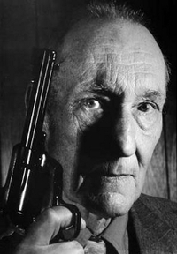
En los artículos anteriores os hablamos de escritores cuyas opiniones políticas los habían arrastrado a la privación de su libertad. En este artículo nos centraremos en otro tipo de delito, como aquellos que se cometen por amor, o por pasión, o simplemente por estar más bebido de la cuenta.
En lo que se refiere a la pasión, no le trajo más que quebraderos de cabeza y problemas con la justicia a escritores como Paul Verlaine u Oscar Wilde. Verlaine recibió su primera carta del poeta Rimbaud en 1871, y en poco más de un año ya había abandonado a su esposa e hijo para fugarse con su nuevo amante. Su relación era conflictiva y muy intensa, y en 1873, en un ataque de celos mientras estaba borracho, Verlaine disparó dos veces contra Rimbaud, aunque no lo hirió de gravedad. El incidente desembocó en el encarcelamiento del poeta simbolista, quien, ya en la prisión de Mons, se convirtió al catolicismo y creó gran parte de su cuerpo poético.
En cuanto a Wilde, sabemos que sus líos con jóvenes de su mismo sexo no le trajeron más que problemas. Animado por su amante, Lord Alfred Douglas, Wilde acusó al padre de éste, el Marqués de Quensberry, de difamación, acusación que se volvió en su contra conforme caían sobre él cargos de indecencia y sodomía. Fue condenado a dos años de trabajos forzados, durante los cuales escribió la larga epístola De profundis, en la que se aleja de manera radical de su anterior apego al esteticismo. Una vez liberado abandonó Inglaterra para no volver: pasó el resto de su vida en Francia, dedicado a la poesía. El tiempo en prisión afectó severamente su ánimo y su salud: murió a la temprana edad de cuarenta y seis años.
Otra historia curiosa, relacionada con el alcohol y la persona amada, es la que incumbe al escritor estadounidense William Burroughs quien, estando en México, disparó y mató a su esposa por error, mientras jugaba a una versión alcohólica de Guillermo Tell. Burroughs se hizo con la ayuda de uno de los abogados más prestigiosos de México, para perderlo poco después debido a la imputación de éste en otro caso independiente. Desesperado, el escritor huyó del país, donde fue condenado a dos años de prisión por homicidio, pena que nunca llegó a cumplir. Lo curioso es que Burroughs había llegado a la capital mexicana precisamente por huir de la justicia estadounidense, que lo buscaba por un caso de tráfico de drogas, delito al que se dedicaba de manera ocasional para pagar su adicción a la heroína.
Éstos no son, ni mucho menos, todos los grandes escritores que han sido encarcelados por un motivo u otro. Otros nombres que os resultarán familiares y que han pasado por prisión son Cervantes, James Joyce, Ovidio, Daniel Defoe o Ezra Pound. Y sí, el ser escritor y expresar lo que nadie quiere oír puede conllevar una pena durísima, pero no todos acabaron en la cárcel por ser adalides de la libertad de expresión. Algunos, simplemente, eran delincuentes.
Febrero, el mes de las cartas
Wed, 01 Feb 2012 06:57:05 +0000
Resulta difícil concebir, en nuestra era de redes sociales, teléfono móvil y correo electrónico, que no hace tanto tiempo los seres humanos se comunicaban escribiendo (sí, escribiendo, con pluma, o bolígrafo, o lápiz) sobre un soporte físico que luego se introducía en un sobre que era recogido y transportado por una empresa de correo. Seguimos [...]
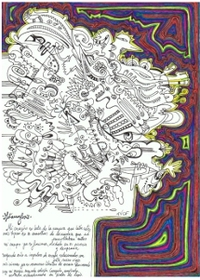
Resulta difícil concebir, en nuestra era de redes sociales, teléfono móvil y correo electrónico, que no hace tanto tiempo los seres humanos se comunicaban escribiendo (sí, escribiendo, con pluma, o bolígrafo, o lápiz) sobre un soporte físico que luego se introducía en un sobre que era recogido y transportado por una empresa de correo. Seguimos recibiendo cartas, sí, pero en general se trata de facturas, extractos bancarios, tal vez alguna tarjeta de cumpleaños o de Navidad, o paquetes pedidos por internet. Es curioso pensar que personas como Voltaire y sus contemporáneos podían escribir diez epístolas al día, en un rabioso afán de estar “actualizado” que competía con nuestro interés contemporáneo por el e-mail o los mensajes instantáneos.
Con el tiempo, esas cartas en papel han ido desapareciendo, y aunque se conservan iniciativas interesantes como el postcrossing, en la que los participantes envían y reciben tarjetas postales unos a otros por todo el mundo, ya casi no las escribimos. Yo misma inicié un proyecto el año pasado que consiste en enviar poemas ilustrados por correo postal, y la respuesta de los participantes suele ser bastante entusiasta, ya que reconocen la rareza de abrir el buzón y encontrar algo que vaya más allá de recibos o publicidad. Algunos de nosotros incluso conservamos, con afecto, las cartas que nos enviábamos en una época en la que todavía se creaban textos manuscritos para los demás.
Para este mes de febrero, la escritora estadounidense Mary Robinette Kowal ha lanzado el reto de escribir una carta diaria (excepto domingos y posibles festivos). La escritora redescubrió el placer de enviar y recibir cartas al tomarse este septiembre pasado unas vacaciones de internet; al no estar conectada a la red, sus conocidos comenzaron a sustituir el correo electrónico por el tradicional. Disfrutó tanto de la experiencia que ahora anima a los demás usuarios de la red a apuntarse. Sólo hay dos reglas:
1.Durante el mes de febrero (de lunes a sábado), envía por lo menos un texto al día por correo postal. Puede ser una carta, un dibujo, un recorte, una tarjeta postal, no importa.
2.Responde a todos los que te escriban a ti. Estas respuestas también pueden contar como textos enviados.
Mary también proporciona algunas ideas para involucrar a otros amigos, como hablar del proyecto en tu Facebook, para que los que quieran que les escribas te manden su dirección, o en Twitter (el hashtag es #LetterMo, pero podría crearse uno específico para hispanohablantes). Y antes de que penséis “pero es que escribir una carta al día me llevaría mucho tiempo”, pensad en cuánto tiempo diario dedicáis a enviar emails, mensajes por redes sociales, mensajes instantáneos o sms; y considerad también el valor de conservar algo en papel, de abrir el buzón y encontrarlo ahí, de tomaros por fin algo de tiempo para relajaros y disfrutar del placer de escribir a mano.
¿Qué os parece esta iniciativa, os veis capaces de llevarla a cabo? ¿Conocéis otros proyectos similares que recuperen el ya casi extinto arte de la epístola tradicional?
Historia de un estado clandestino, de Jan Karski
Mon, 30 Jan 2012 06:54:14 +0000
Historia de un estado clandestino fue escrito por Jan Karski en 1944 y en él narra en primera persona sus vivencias tras la invasión nazi de Polonia. Karski es un joven de clase media con un futuro en el mundo de la diplomacia y que se enfrenta, al igual que su país, de manera confiada [...]
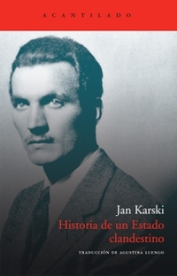
Historia de un estado clandestino fue escrito por Jan Karski en 1944 y en él narra en primera persona sus vivencias tras la invasión nazi de Polonia. Karski es un joven de clase media con un futuro en el mundo de la diplomacia y que se enfrenta, al igual que su país, de manera confiada a una posible guerra con Alemania; la guerra relámpago y la humillación del ejército polaco por parte del ejército nazi con la subsiguiente ocupación son el inicio de esta biografía novelada. Karski escribe de manera ágil sin ahorrar demasiados detalles y consigue ofrecernos una visión clara de la resistencia polaca. Esta resistencia toma la forma de un estado clandestino estructurado y con contactos con el gobierno polaco en el exilio.
Karski es uno de los oficiales derrotados por los alemanes y hechos prisioneros por los soviéticos, en una demostración de que en Polonia saben perder guerras como nadie. Tras conseguir huir de los soviéticos comienza su regreso a Varsovia esperando encontrar noticias sobre la resistencia o supervivencia del ejército polaco pero solo encontrando pruebas de la gran derrota sufrida. Una vez en Varsovia consigue contactar con la resistencia y comenzar a trabajar para ellos.
En el libro veremos a Karski sirviendo de enlace entre Varsovia y París, ser descubierto por la Gestapo, torturado, rescatado, volver a trabajar como propagandista, … hasta que llega su misión más importante: viajar a Londres para contactar con el gobierno polaco y con el resto de gobiernos aliados e informar de la situación en Polonia, con su peculiar estado clandestino, y de la situación de los judíos.
En el relato se explican algunas de las maneras que encontró la resistencia polaca de luchar contra el poder prácticamente omnipresente de los nazis, creando una red clandestina bajo la premisa de “sin contacto hacia arriba” de manera que una detención o traición no afectara a la estructura o apelando al patriotismo polaco y a una actitud inflexible frente al ocupante. Los Volksdeutche era el nombre que se daba a los colaboracionistas con los nazis que conseguían prebendas en base a una más o menos creíble ascendencia germana y son los protagonistas de una de las acciones de boicot de Karski en su faceta de propagandista cuando está refugiado en la granja Sawa, una de las partes más ágiles del libro.
Pero sin duda, la parte más llamativa del relato de Karski es la relativa a la situación de los judíos en Polonia. Como parte de la preparación de su viaje a Londres, donde debe ofrecer la imagen más amplia y real de lo que está ocurriendo en Polonia, se pone en contacto con dos líderes judíos que consiguen introducirlo en el gueto de Varsovia y en el campo de concentración de Belzec donde es testigo de las ejecuciones. Los dos capítulos son terribles ya que se trata de un relato en primera persona de un testigo directo pero la totalidad de su horror llega varias páginas después cuando Karski les narra a una pareja alemana amiga lo que ha visto en Belzec. Belzec fue el primer campo de exterminio nazi y también el primero en desmantelarse y sus números son terribles: únicamente dos supervivientes del más de medio millón de personas, mayoritariamente judíos pero también gitanos o polacos, que se calcula llegaron al campo.
Creo que es un libro imprescindible para cualquier aficionado a la Segunda Guerra Mundial o a la historia, aunque por la manera de narrar de Karski y los temas que trata lo recomendaría sin dudar a cualquier buen lector. La edición de Acantilado es, como es habitual, muy cuidada con una introducción a la figura del autor y las circunstancias de libro y con extensas notas que apostillan la memoria del escritor, aunque, para los lectores perezosos a los que nos les gusta tener que buscar las notas a final de libro, tampoco son imprescindibles para seguir la narración.
Los favoritos de nuestros favoritos: H. G. Wells
Sat, 28 Jan 2012 07:00:50 +0000
En la escritura, como en cualquier área de conocimiento, todo el que ejerce, sea profesional, aficionado o algún ente intermedio por definir, cabalga sobre los hombros de gigantes. Todos, en algún momento, nos hemos sentido apabullados por el talento de un gran escritor, y su influencia es inevitable, aunque ni siquiera sea de una manera [...]
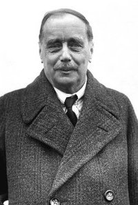
En la escritura, como en cualquier área de conocimiento, todo el que ejerce, sea profesional, aficionado o algún ente intermedio por definir, cabalga sobre los hombros de gigantes. Todos, en algún momento, nos hemos sentido apabullados por el talento de un gran escritor, y su influencia es inevitable, aunque ni siquiera sea de una manera consciente. ¿Pero cuáles fueron los autores que más prestigio obtuvieron en la estantería de nuestros escritores favoritos?
Más allá de los clásicos innegables, literatos como Shakespeare o Cervantes, aparecen nombres, sean o no sean de primera división, de un modo constante en entrevistas, autobiografías y ensayos de autores. Uno de los nombres recurrentes es el de H. G. Wells, conocido por obras como La guerra de los mundos y favorito de muchos. Borges era un gran admirador y decía de él que era “un admirable narrador, un heredero de las brevedades de Swift y de Edgar Allan Poe”. Para él, parte de la grandeza de Wells se hallaba, precisamente, en sus espléndidos antecesores. Y su herencia no ha sido menos extraordinaria, ya que de su fuente han bebido innumerables escritores de ciencia ficción, entre los que podríamos destacar a Robert Silverberg (él mismo define su obra The Alien Years, publicada en 1997 y nominada al premio Locus en 1999, como un claro homenaje a La máquina del tiempo), o a Arthur C. Clarke, conocido sobre todo por su célebre 2001: Odisea en el espacio, que también era un conocido admirador de Wells, al igual que tantos otros del género de la ficción especulativa. El enfrentamiento del hombre con lo desconocido, su impulso a través de diferentes niveles de existencia (lo social, lo tecnológico, incluso lo político) son aspectos de la obra de Wells que también marcaron con fuerza al gran George Orwell, cuyo 1984 se mantiene en la línea distópica que ya presentó el primero en su engañoso viaje al futuro en La máquina del tiempo. Sin embargo, goza asimismo de seguidores alejados de este entorno fantástico, como Nabokov, que reconocía haber seguido mucho a Wells en su juventud y que estaba enamorado de ciertas escenas de Amigos apasionados, un relato de Wells de 1913.
Por otro lado, a pesar de las tendencias izquierdistas del Sr. Herbert George, tenía también importantes aficionados de creencias muy alejadas a las suyas. C. S. Lewis, creador de las archiconocidas Crónicas de Narnia, se declaraba “bajo la influencia” de Wells, tanto que sentía la necesidad de “exorcizarlo” o expulsarlo de su estilo y escritura.
Las influencias siempre son interesantes, y por supuesto necesarias para el estudio literario. Se agradecen también como recomendaciones: si un autor nos encanta, es muy probable que los autores de los que éste, a su vez, disfrute, sean también de nuestro agrado. Para esto pueden ser muy útiles proyectos como el blog Las afinidades electivas, una red de poetas que se conectan y recomiendan entre sí, produciendo una experiencia enriquecedora, preseleccionada, para los amantes de la buena poesía. Si tuviéramos que hacer una red interactiva con un escritor como Wells, seguramente las conexiones serían interminables.
Amantes poco avispados
Tue, 14 Feb 2012 06:59:46 +0000
¿Quién no conoce la historia de Romeo y Julieta? Chico conoce a chica, chico y chica se enamoran pero sus familia son adversarias, chico y chica acaban suicidándose por error. Seguramente la obra más conocida de Shakespeare, el drama de los amantes de Verona recupera la más excelsa de las tradiciones de la tragedia griega: [...]

¿Quién no conoce la historia de Romeo y Julieta? Chico conoce a chica, chico y chica se enamoran pero sus familia son adversarias, chico y chica acaban suicidándose por error. Seguramente la obra más conocida de Shakespeare, el drama de los amantes de Verona recupera la más excelsa de las tradiciones de la tragedia griega: el poder del destino, la ironía, y un final tan estúpido que produce en el público una sensación de frustración liberadora que los antiguos decidieron llamar catársis. Al fin y al cabo, Romeo y Julieta no tenían que morir, su fallecimiento se debe a una serie de malentendidos absurdos que los conduce, quieran o no, al desastre.
Shakespeare se inspiró, a su vez, en una narración bastante más antigua, recogida por Ovidio en su Metamorfosis. Píramo y Tisbe eran dos jóvenes babilonios enamorados que o bien pertenecían a familias que, igual que los Capuleto y Montesco de Shakespeare, estaban enfrentadas, o simplemente no aprobaban la relación entre los jóvenes. Estos deciden huir, y de manera muy inteligente, se citan en un páramo asilvestrado por donde suelen andar fieras peligrosas. Llega primero Tisbe, quien se encuentra de frente con una leona y sale huyendo. La leona consigue arrancarle el velo, con el que juega y después abandona por el camino, dejándolo manchado de sangre (suponemos que de la propia leona o alguna presa recién devorada). Aparece Píramo y, sin más pistas que un velo ensangrentado, deduce que Tisbe ha muerto. Desesperado ante la noción de una vida sin su amada, se abalanza sobre su propia espada y se da muerte. Poco después, regresa a escena Tisbe y, al encontrarlo sin vida, toma la espada y la utiliza para suicidarse. De esto se deduce, como de tantas otras historias parecidas, que la puntualidad en las citas es una virtud infravalorada; de la insensatez de estos amantes y de todo su encuentro se burló Góngora en su obra La fábula de Píramo y Tisbe.
Tampoco está de más gozar de una buena forma física, ya que una elaborada y triunfante historia de amor, que ha superado ya grandes obstáculos, puede terminar en tragedia por un simple tropiezo. Así le ocurrió a Calisto, en la aclamada novela atribuida a Fernando de Rojas, La Celestina, en la que, tras toda una serie de aventuras y desventuras, la historia de amor y deseo de los dos jóvenes nobles, Calisto y Melibea, se ve truncada por la torpeza de éste, quien, al escuchar ruidos de trifulca al otro lado del muro de su amada (con quien se hallaba gozando), trepa y salta dicho muro de mala manera, cayendo con tal mala fortuna que muere. Acto seguido, suicidio de Melibea, no sabemos a ciencia cierta si por puro y desafortunado amor, o la incapacidad de soportar el rechazo social que obtendría al descubrirse el pastel de su relación ilícita. Lo interesante de La Celestina, y seguramente por esto se incluye una muerte tan ridícula y denigrante, es que a diferencia de las tradiciones clásicas, el amor de los jóvenes no es puro, ni es desinteresada la ayuda que les prestan sus cómplices. En el fondo, su muerte es un escarnio, un castigo al sacrilegio cometido contra la pureza y platonismo del amor cortés, pero también es un aviso, una moraleja, dirigida hacia los enamorados que pierden la cabeza.
El renacimiento del blog y la nueva crítica juvenil
Sun, 12 Feb 2012 07:00:34 +0000
Hace un año o dos, seguramente coincidiendo con el crecimiento más intenso de páginas como Facebook o aplicaciones como Twitter, escuché la frase “las redes sociales han matado al blog”. Revisando las estadísticas de blogs propios y ajenos, era inevitable que la frase tenía gran parte de razón: desde nuestra mudanza a las redes sociales, [...]

Hace un año o dos, seguramente coincidiendo con el crecimiento más intenso de páginas como Facebook o aplicaciones como Twitter, escuché la frase “las redes sociales han matado al blog”. Revisando las estadísticas de blogs propios y ajenos, era inevitable que la frase tenía gran parte de razón: desde nuestra mudanza a las redes sociales, amigos, conocidos y lectores nos buscaban para un contacto más directo y espontáneo que el que ofrecía un listado de artículos con mucho texto, pocas imágenes y cierta tendencia a la verbofagia. Las andanzas y reflexiones cotidianas, de mayor o menor interés, pasaban de la parrafada a una cómodas entregas al minuto de menos de 140 caracteres. A excepción de los grandes blogs, que ya tenían una masa crítica de público fiel, o se centraban en temática especializada que las redes sociales no podían suplir, la lectura del post se reducía de manera alarmante, demostrando una vez más que vivimos en una cultura de inmediatez, de información concentrada expulsada a velocidades de vértigo desde todas las direcciones.
Esta tendencia de abandono parecía afectar también a blogs especializados de crítica literaria. En la época de auge del blog, hace cinco o seis años, las bitácoras de reseñas se seguían con asiduidad, ya que eran una fuente excelente de recomendaciones y valoración. La crítica profesional perdía, poco a poco, atractivo; el lector quería saber qué libros gustaban a otros que compartían sus gustos y preferencias. De nuevo, con la llegada de la revolución de las redes sociales, estos blogs especializados perdían lectores, que emigraban hacia los grupos y la comunicación masiva que ofrecían productos como Lecturalia o Goodreads. En contrarrestación, surge una nueva generación de blogs y de blogueros: las bitácoras de literatura juvenil.
El poder que empiezan a ostentar estas bitácoras es más que evidente, si bien editoriales y promotores parecen obviarlo, empeñándose en repartir paquetes de prensa a medios que poco interesan y poco afectan al público objetivo de este género. El mercado de la lectura juvenil está en constante crecimiento gracias al éxito de sagas como Crepúsculo, Los juegos del hambre o Harry Potter, debido a un grupo de población gigantesco que de repente descubre que leer puede ser muy divertido. Y el adolescente medio no recurre a las revistas especializadas para averiguar qué libros podrían interesarle, más que nada porque dichas revistas no atienden a sus necesidades. Hay pocas, si las hay, publicaciones que reflejen las necesidades críticas del género juvenil, por lo que son los propios lectores quienes han asumido el papel necesario. Sus reseñas con frecuencia son, como cabe esperar, limitadas, repletas de faltas de ortografía e hinchadas de emoticonos, bailando en páginas web de dudoso diseño, a falta de correctores, formación especializada, diseñadores y asesores de mercadotecnia (si bien existen algunas sorprendentemente profesionales). Sin embargo, recuperan aquello que los profesionales parecen haber olvidado: cómo analizar de manera eficiente un libro, reconocer incoherencias y fallos estructurales, examinar personajes y, sobre todo, cómo entusiasmarse ante el puro placer de leer y descubrir mundos nuevos.
Para la persona que lo tiene todo
Fri, 10 Feb 2012 07:00:54 +0000
Ahora que se acerca San Valentín, algunos prefieren eludir el regalo tradicional de bombones, flores o joyas y partir en busca de un obsequio realmente original. Desde Lecturalia, como siempre, abogamos por regalar libros, ¿pero qué libro puede regalarse a esa personas que los devora con ansiedad, que tiene una estantería gigantesca repleta de títulos? [...]
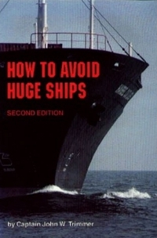
Ahora que se acerca San Valentín, algunos prefieren eludir el regalo tradicional de bombones, flores o joyas y partir en busca de un obsequio realmente original. Desde Lecturalia, como siempre, abogamos por regalar libros, ¿pero qué libro puede regalarse a esa personas que los devora con ansiedad, que tiene una estantería gigantesca repleta de títulos? Más aun, ¿qué libro sería lo bastante especial para celebrar un día que los comercios nos aseguran que es la jornada obligatoria del sentimentalismo y el despilfarro cursi?
Aunque nuestra variante española, Amazon.es, parece tener una oferta más limitada, cualquiera que haya pasado un rato navegando por la mastodóntica Amazon.com se habrá dado cuenta de la inmensa cantidad de objetos extraños que pueden adquirirse en ella. Amazon es conocido en primer lugar como vendedor de libros, y más allá de eso sabemos que también ofrece videojuegos, música, electrónica y juguetes, entre algunas cosas más. Entre esas “algunas cosas más” pueden encontrarse objetos tan curiosos como orina de lobo ( ), réplicas de trajes espaciales (ya no disponibles, una lástima), muñecos de Sigmund Freud u ovejas hinchables. Pero ya que estamos buscando libros, no podemos dejar de lado los títulos más llamativos, ya que encontramos desde un tratado ecologista sobre los nazis, How green were Nazis, hasta cómo hacer punto usando pelo de tu perro, Knitting dog hair better Sweater. Otras lindezas de lo raro y peculiar son How to Avoid Huge Ships (Cómo evitar barcos grandes ; The Big Book of Lesbian Horse Stories (El gran libro de historias lésbicas con caballos ; The Worst Baby Name Book Ever, El libro de los peores nombres para bebés; How to Date a White Woman: A Practical Guide for Asian Men (Cómo salir con una mujer blanca: Guía práctica para hombres asiáticos o The Big Coloring Book of Vaginas (El gran libro para colorear de vaginas), que incluye numerosas ilustraciones en blanco y negro para colorear todo tipo de genitales femeninos (curiosamente, Amazon.com no te ofrece aquí su opción habitual de “mirar dentro”).Y si lo que queréis es una lista elaborada sobre libros muy muy extraños a lo largo de la historia, no tenéis más que visitar el blog Incredibly Strange Books que, pese a su título, está escrito en español.
Como siempre, lo mejor de cada producto son las reseñas falsas que les dedica más de un consumidor sarcástico. En cualquier caso habrá que andarse con ojo, que también nos encontramos con situaciones inintencionadamente cómicas, como las de la estudiante Sophia Stockton, que adquirió a través de la empresa Warehouse Deals (una subsidiaria de Amazon) un libro de texto sobre terrorismo. Cuál no sería la sorpresa de Sophia, al desembalar su compra y ver que junto a ella había una bolsita con un sospechoso polvo blanco. ¿Polvo blanco, junto a un libro sobre terrorismo? Temiendo que pudiera tratarse de ántrax, asustada, la estudiante llevó la bolsa a la policía, que la analizó. Tras los resultados, le preguntaron si había pedido cocaína con su libro. La bolsita estaba valorada en $400.
Este año, compra libros para San Valentín. Como habréis visto, títulos “especiales” no faltan (si bien no son precisamente románticos, con la posible excepción del libro de colorear), y siempre que tengáis cuidado con los extras no deseados, no deberíais tener problema en dar con la obra perfecta.
Tatuajes literarios
Wed, 08 Feb 2012 06:52:11 +0000
Los tatuajes, antaño símbolo de rebeldía, de delincuencia, de pertenencia a un grupo u oficio, se han convertido en un accesorio más de la moda actual. Al igual que el piercing, han evolucionado y popularizado hasta el punto de formar parte de nuestro entorno diario. Y es que no hace falta tatuarse un dragón gigante [...]
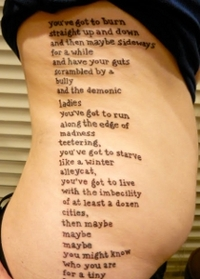
Los tatuajes, antaño símbolo de rebeldía, de delincuencia, de pertenencia a un grupo u oficio, se han convertido en un accesorio más de la moda actual. Al igual que el piercing, han evolucionado y popularizado hasta el punto de formar parte de nuestro entorno diario. Y es que no hace falta tatuarse un dragón gigante en la espalda, la mayoría se conforman con un pequeño detalle ubicado en una parte discreta del cuerpo. Una imagen, un icono, unas letras. ¿Y si tuvieras que elegir qué llevar dibujado en tu cuerpo para el resto de tu existencia, qué mejor que una serie de palabras que han marcado tu vida? Pueden pertenecer a una cita filosófica que represente una forma de pensar, un carpe diem o un lo que no me mata me hace más fuerte, pero cada vez aparecen más referencias a libros y textos favoritos. Por un lado está el uso de imágenes asociadas a la literatura: retratos de escritores (a nivel mundial, Shakespeare parece ser el más popular), imágenes de personajes y escenas (sí, existen versiones de póster de Crepúsculo tatuados en espaldas enteras, y un tal John Mosly, de Norwich, Inglaterra, tiene una gigantesca imagen donde uno puede divertirse buscando a Wally). Hay muchas páginas webs que dedican atención a este tipo de tatuajes, seguramente la más conocida sea Contrariwise.
Algunos escritores son más citados que otros. Bukowski es uno de los grandes favoritos, ya que tiene muchísimo material controvertido con el que jugar. Bastante más inocente es otro de los preferidos para dibujos permanentes: El principito de Saint Exupéry, a través sobre todo de las imágenes realizadas para la obra por el propio autor, quien había estudiado arquitectura de joven pero que nunca había recibido formación artística. Sus delicadas acuarelas han avivado la imaginación de sus seguidores desde que salió la primera edición de la obra en 1943.
Fuera de nuestras fronteras, sobre todo en el mundo anglosajón, parece ser que la obra de referencia más popular es Matadero cinco de Kurt Vonnegut (en concreto, la expresión “so it goes”, “así fue”, utilizada en la novela ante todas las situaciones de muerte y/o pérdida), seguido de cerca por Las aventuras de Alicia en el País de las Maravillas, de Lewis Carroll. Otros tatuajes globales provienen de la obra El club de la lucha, de Chuck Palahniuk, o el célebre monólogo inicial (y final) de la película Trainspotting que se basa en la novela homónima de Irvine Welsh. Pero también hay aprecio por lo hispano: el Quijote es otro tema relativamente común, sobre todo en la versión casi abstracta que imaginó Pablo Picasso del Caballero de la Triste Figura, imagen que realizó en 1955 para la publicación francesa Les Lettres Françaises y que se ha convertido casi en un logotipo para el personaje.
Gran parte de estos tatuajes son creaciones originales y hermosas que seguramente seguirán en la piel para siempre, ya que cuando uno se enamora de un libro, no suele desenamorarse con facilidad. El éxito suele estar en la sutileza y en el ingenio, como la divertida idea de tatuarse el número de Azkaban de Sirius Black, por ejemplo, un gesto que sólo apreciarán los muy aficionados a la obra de J. K. Rowling. Sin embargo, también hay desastres, como puede ocurrir con un mal tatuador, un cliente con mal gusto o la tremenda resaca con la que uno se levanta y descubre, horrorizado, que tiene a Daniel Radcliffe tatuado en el culo.
Sony PRS-T1, lo hemos probado
Mon, 06 Feb 2012 07:03:23 +0000
Cada vez se hace más difícil decantarse por un lector de libros electrónicos debido al notable incremento de la oferta que se ha producido en los últimos meses. La gente de Sony ha tenido a bien mandarnos un par de dispositivos Sony PRS-T1 para que podamos probar de primera mano su tecnología y hacer un [...]
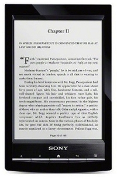
Cada vez se hace más difícil decantarse por un lector de libros electrónicos debido al notable incremento de la oferta que se ha producido en los últimos meses. La gente de Sony ha tenido a bien mandarnos un par de dispositivos Sony PRS-T1 para que podamos probar de primera mano su tecnología y hacer un pequeño sorteo entre los lectores que residan en España. (Podéis ver las bases al final del artículo)
El Sony PRS-T1 presenta la habitual pantalla de 6 pulgadas y utiliza E-Ink Pearl v220 con 800×600 y 16 niveles de grises que le sirven para colocarse en lo alto de la lista en especificaciones, junto con otros dispositivos de última generación. Además, es bastante ligero, con 168 gramos y menos de 9 milímetros de grosor.
El lector se hace ligero y agradable en la mano. Quizá se echa un poco de menos el acabado del anterior reader de Sony, más metálico, pero el diseño mantiene las mismas líneas y la verdad es que se agradece a la vista. Otro de los atractivos que saltan a la vista en cuanto se pone en marcha es la calidad de la pantalla táctil. La respuesta es muy rápida, la velocidad de refresco es de las mejores que he visto, y es muy intuitivo el tomar notas en ella o subrayar. El teclado virtual también es muy rápido y la gestión de las notas y dibujos a mano también ha mejorado, lo que junto a sus diccionarios lo convierten en un gran compañero de estudio.
La gran diferencia con anteriores modelos de Sony está en el interior: la conectividad Wifi permite el acceso a tiendas virtuales o a Google Books directamente desde el dispositivo, así como a la Wikipedia. Como en todos estos gadgets, si queremos que la batería dure lo máximo posible hay que tener cuidado con el WiFi, pero bueno, nos prometen un mes si lo desactivamos y más o menos tres semanas dándole uso.
¿Qué formatos de ebook lee el Sony PRS-T1? Pues bien, el Sony Reader PRS-T1 lee ePub y Adobe PDF, con o sin DRM, con lo que no tendrás problema en leer cualquier libro comprado en la mayoría de tiendas de ebooks en España. Además también reproduce música en mp3 y AAC, así como los formatos de imagen más comunes (JPEG, GIF, PNG, BMP).
Después de trastear un rato con el ereader de Sony las sensaciones son agradables. Funciona muy fluido, las transiciones son casi instantáneas, los ajustes de tamaño y tipo de letra no presentan ninguna dificultad, además de lo principal, claro: la lectura es muy agradable. Hemos probado a tomar notas y a cargar unos cuantos libros en su memoria, de 2 GB y con ranura SD-, usando el software de Sony que va muy bien, incluso para libros con el DRM de Adobe.
Sin duda, nos encontramos con un dispositivo que está en el top de la tecnología de consumo en estos momentos y, en mi opinión, bastante mejor que el Kindle que se vende ahora en España -aunque la diferencia de precios favorece al de Amazon, 99 euros frente a casi 180 del de Sony- y que puede tutear sin problemas al Kindle Touch o al nuevo Nook, los grandes referentes a nivel internacional, pero que no se venden directamente en nuestro mercado.
Para participar en el sorteo de uno de los dos Sony Reader PRS-T1 es necesario dejar un comentario en esta misma entrada del blog (recuerda poner tu email real). El sorteo de los Sony PRS T1 se realizará entre todos los usuarios residentes en España que hayan dejado su comentario en este artículo desde su publicación hasta las doce de la noche del 12 de febrero. Los ganadores serán anunciados en Facebook, Twitter y los comentarios de esta entrada el 13 de febrero de 2012 y contactados mediante su correo electrónico el mismo día. El sorteo se realizará mediante el sistema de Random.org y a través del mismo se elegirán dos ganadores. ¡Suerte a todos los participantes!
El verdadero trabajo del escritor
Sat, 04 Feb 2012 07:00:51 +0000
Pasar la tarde en el Twitter, contestar a los mensajes del Facebook, revisar la página del G+, actualizar la biografía en la página web, escribir algo ocurrente para el blog, discutir en los foros por culpa de los libros electrónicos, preguntarse si debería publicar con Amazon a 0,99 o aparecer en las redes sociales ligero [...]
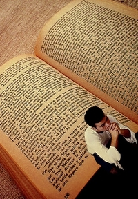
Pasar la tarde en el Twitter, contestar a los mensajes del Facebook, revisar la página del G+, actualizar la biografía en la página web, escribir algo ocurrente para el blog, discutir en los foros por culpa de los libros electrónicos, preguntarse si debería publicar con Amazon a 0,99 o aparecer en las redes sociales ligero de ropa.
Nada de lo anterior es el verdadero trabajo del escritor.
Leer aburridos libros de historia, observar, sin que se den cuenta, a extraños en los bares, apuntar anécdotas que cuentan los amigos, anotar sueños nada más despertar, pasar horas delante del teclado venciendo la tentación del correo electrónico, borrar treinta páginas al darse cuenta que no podían funcionar, descubrir a mitad de novela que te apetece escribir un cuento, alargar un cuento tanto que se convierte en novela, revisar hasta que se caen los ojos, acostarte de madrugada robándole horas al sueño. Escribir. Revisar. Esperar.
A veces, de tanto hablar del mercado, de la industria, del libro electrónico, de las distribuidoras y las nuevas tecnologías parece más que hablemos de chorizos y salchichones que de literatura. En cierto modo, si los lectores no hacen más que vernos hablar de porcentajes, targets, derechos de autor, piratas, descargas y que si Amazon por aquí y Apple por allá, ¿qué imagen damos?
La verdad es que tengo más preguntas que respuestas. ¿Qué quiere un escritor? ¿Ser leído? ¿Triunfar? ¿Qué es triunfar entonces? ¿Vender libros, ser leído, escribir lo mejor posible? ¿Puede todo lo anterior ser compatible? ¿Qué hay que hacer para conseguirlo todo? ¿Quién quieres ser, Pérez Reverte o acabar como John Kennedy Toole?
Sin duda, cada caso individual será diferente, sobre todo si tenemos en cuenta de que el acto de escribir es uno de los más personales que puede ejecutar una persona. Me temo que si siguiera escribiendo acabaría en la eterna discusión de artistas y artesanos, que por ser maniquea y manida es mejor no enfrentar. Tan sólo reflexionemos como escritores la razón que nos mueve a escribir y qué esperamos de ello, qué estamos dispuestos a sacrificar, qué es lo que al final merece la pena y lo que no.
Y es que el verdadero trabajo del escritor es dejarse herir por las palabras y morir en cada página. Nada más.
El nuevo arte de cazar libros
Thu, 02 Feb 2012 06:58:31 +0000
Se ha celebrado en Nueva York la Digital Book Expo, donde cientos de editores y escritores se han lanzado a pintar un futuro brillante para la edición digital en los próximos años en Estados Unidos. La verdad es que las editoriales americanas están haciendo un esfuerzo para adaptarse a los nuevos tiempos, siendo las editoriales [...]
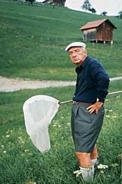
Se ha celebrado en Nueva York la Digital Book Expo, donde cientos de editores y escritores se han lanzado a pintar un futuro brillante para la edición digital en los próximos años en Estados Unidos. La verdad es que las editoriales americanas están haciendo un esfuerzo para adaptarse a los nuevos tiempos, siendo las editoriales independientes las que ven nuevos nichos de mercado, como la escritura social de libros, que aprovechar con la llegada de nuevas tecnologías aplicadas al mundo del libro y las redes sociales.
Me gustaría señalar las declaraciones de Neil Gaiman al periodista de The Guardian, Richard Lea, preguntado por cómo ve el autor británico el futuro del libro.
Publicar hoy en día es como el Klondike. Nadie sabe qué está pasando. Todo lo que saben es que hay oro en las colinas y quieren hacerse con él. A la publicación tradicional le quedan cinco o diez años, pero eso no va a significar menos libros. Habrá un montón de libros más, sólo que la gente los encontrará de manera diferente.
La gente los encontrará de manera diferente. Ahí está una de las claves más importantes dentro del negocio editorial en los próximos años. No tanto cómo serán los ereaders, los formatos de los ebooks o los royalties para los autores. Lo hemos comentado alguna vez, pero lo cierto es que viendo cómo funcionan los servicios de autoedición digital, en los próximos años asistiremos a la irrupción en el mercado de cientos de miles de ebooks de los que no tendremos ni la más mínima referencia.
Una actitud frente a estos libros puede ser la vía dura, filtrando todos los contenidos que no vengan de editoriales que conozcamos. Esto sería darle un valor al trabajo del editor. Pero claro, de esta manera también nos podríamos perder obras interesantes sólo porque muchos escritores se hayan hartado de llevarse apenas un 10% por sus libros. También hemos hablado de ese filtro que deben introducir algunos libreros digitales para destacar novedades que aparezcan desde editoriales pequeñas o independientes, o desde la propia autoedición.
Las redes sociales, como Lecturalia, también van a jugar un gran papel al juntar en un mismo portal un gran número de opiniones y recomendaciones, accesibles de una manera muy sencilla. El poder prescriptor de la comunidad es algo a tener muy en cuenta en el futuro, que se presenta, al menos en un futuro inmediato, algo caótico.
Si hasta ahora encontrar libros nuevos y diferentes era un trabajo complicado, revisando catálogos y autores recomendados entre amigos, pronto se convertirá en un trabajo de caza en una jungla repleta de animales peligrosos. También hay que ir más allá de las listas automatizadas de más vendidos o más visitados por una sencilla razón, acaban por ser listas autoalimentadas. Si se da un espacio privilegiado a una serie de libros acaban siendo siempre los mismos los que reciben un mayor volumen de visitas y ventas. Bueno para el negocio de ventas, no hay duda, pero poco interesante desde el punto de vista de un buen cazador de libros.
¿Y vosotros? ¿Cómo creéis que será el mundo del futuro a la hora de encontrar un buen libro, dejando a un lado el clásico recurso de pasear una tarde de sábado entre las interminables estanterías de una librería?
Escritores en la cárcel (II)
Tue, 31 Jan 2012 06:49:54 +0000
En el artículo anterior ya os mencionamos a varios escritores que acabaron pasando un tiempo en la cárcel por diferentes razones. En concreto hablamos del Marqués de Sade y de Dostoyevski. En lo que a rusos disidentes se refiere, la lista es muy larga, pero aparte de Dostoyevski es posible que el caso más conocido [...]
En el artículo anterior ya os mencionamos a varios escritores que acabaron pasando un tiempo en la cárcel por diferentes razones. En concreto hablamos del Marqués de Sade y de Dostoyevski. En lo que a rusos disidentes se refiere, la lista es muy larga, pero aparte de Dostoyevski es posible que el caso más conocido de encarcelamiento por opiniones políticas sea el de Solzhenitsyn. Acusado de conspirar contra el régimen y de escribir “propaganda antisoviética” (Solzhenitsyn describió con gran detalle la realidad detrás de los gulag o campos de trabajo soviéticos), fue condenado a ocho años de trabajos intensivos y a un destierro posterior (aunque pudo regresar a Rusia muchos años después). En el exilio, trabajaba durante el día como profesor y dedicaba sus noches a escribir. En 1970 recibió el Premio Nobel de Literatura.
La persecución política es una de las razones principales por las que un autor puede acabar pasando largas temporadas a la sombra. Otro de los casos más conocidos, y muy anterior a los ya mencionados es el de Tomás Moro, que nunca aceptó las intenciones de su rey, Enrique VIII, de constituir la iglesia inglesa como una entidad propia independiente de las órdenes de Roma. Debido a la negativa del Papa de concederle el divorcio con Catalina de Aragón para poder casarse con Ana Bolena, el rey anglosajón decidió separarse de la autoridad de Roma de manera definitiva. Si bien Tomás Moro, célebre tanto como consejero de confianza del rey como por ser autor de obras como Utopía y uno de los defensores más acérrimos de la fe católica, terminó por aceptar la separación entre Enrique y Catalina, tomando a la Bolena como legítima reina, no podía consentir la creación de una nueva iglesia independiente, a sabiendas de que ésta se impregnaría con las nuevas creencias que atravesaban la misma Europa que había visto nacer a Lutero, a Calvino y a tantos otros, designados herejes por el Vaticano. Moro pasó sus últimos días en la Torre de Londres, y fue condenado a morir ahorcado y descuartizado, destino reservado a los condenados por alta traición, si bien el rey le conmutó la pena por decapitación, una ejecución bastante más limpia generalmente reservada a nobles y aristócratas.
El escritor francés Voltaire tampoco se libró de la reclusión, durante once meses, en la Bastilla, en gran parte por su propia literatura, de carácter marcadamente crítico y satírico. Durante estos once meses demostró una vez más su gran prolijidad escribiendo su primera obra dramática: Edipo, que llegó a ser una de las obras más representadas del teatro francés. La obra se estrenó el 18 de noviembre de 1718 en la Comédie-Française, estando el propio autor exiliado. Uno de los invitados de honor fue el propio regente, de quien se rumoreaba que mantenía una relación amorosa con su propia hija; por lo que la obra de Voltaire adquirió un carácter satírico sin siquiera proponérselo: dicha representación alcanzó fama y popularidad debido a la polémica asociada al tema de la obra, el incesto.
Escritores en la cárcel (I)
Sun, 29 Jan 2012 07:00:01 +0000
Como parte activa del entramado cultural e intelectual de un sistema político, es inevitable que la voz del escritor, pertenezca o no al subgrupo periodístico y/o de comunicación de un país, pueda llegar a representar una amenaza al statu quo, sobre todo en regímenes autoritarios o en estados sometidos a la propaganda de los grupos [...]
Como parte activa del entramado cultural e intelectual de un sistema político, es inevitable que la voz del escritor, pertenezca o no al subgrupo periodístico y/o de comunicación de un país, pueda llegar a representar una amenaza al statu quo, sobre todo en regímenes autoritarios o en estados sometidos a la propaganda de los grupos de poder. Es muy frecuente, por tanto, que nos encontremos con casos como los del escritor y disidente chino Zheng Yichun, autor reconocido a nivel internacional, ganador del primer premio internacional de derechos humanos Dr. Rainer Hildebrandt, y liberado hace poco de la cárcel de Nanshan, donde había cumplido una condena de seis años por escribir reivindicando reformas políticas en su país.
Sin embargo, no todos los grandes escritores acaban en prisión por exigir libertades cívicas. Los hay que han dado con sus huesos en la cárcel por tratar temas de discutible moralidad, censurables en su país o época, o simplemente por comportarse como delincuentes comunes. A continuación enumeraremos algunos de los más llamativos.
En lo que se refiere a escribir sobre temas considerados obscenos (y en muchas ocasiones obrar en consecuencia), tenemos el ejemplo notable de Donatien Alphonse François de Sade, mejor conocido como Marqués de Sade. Sus escritos revolucionarios (y actos poco decentes) tuvieron en jaque a varios regímenes, pero se hallaba protegido, hasta cierto punto, por su título nobiliario y contactos en las altas esferas. No queda claro cuánto de cierto hay en las leyendas que rodean a su persona, cuánta verdad existe en las acusaciones y rumores que lo rodearon a lo largo de su vida, pero estuvo recluido en varias prisiones y manicomios, tanto por su comportamiento disoluto como por los manuscritos “peligrosos” que escapaban de su pluma y que se publicaban y circulaban de manera clandestina pero con gran éxito.
Los escritos de Sade han tenido una acogida dispar a lo largo de los años, Para escritores como Bataille, sus obras eran “apologías del crimen”, mientras que para otros autores, como Rimbaud, Apollinaire, o Breton y los surrealistas, eran obras de arte incomprendidas. Entre los que se vieron influidos por su escritura estuvo el escritor ruso Dostoyevski, otro autor que sufrió el encarcelamiento y un posterior destierro para realizar trabajos forzados en Siberia. Había sido arrestado por razones políticos: según las acusaciones realizados contra él formaba parte del grupo intelectual liberal conocido como Círculo Petrasheyski, acusado de conspirar contra el zar, quien desconfiaba de todo tipo de agrupaciones clandestinas debido al clima revolucionario que se llevaba respirando en Europa desde 1848. Aunque sus compañeros fueron condenados a muerte, el escritor consiguió que se le conmutara la pena por trabajos forzados. La segunda parte de su condena lo obligaba a incorporarse al ejército como soldado raso, una vez finalizara su estancia en Siberia, por lo que pasó cinco años más de su vida bajo el poder del estado, acuartelado en Semipalátinsk, en Kazajistán. Con el tiempo obtuvo una amnistía y pudo recuperar tanto su título nobiliario como permiso del nuevo zar, Alejandro II, para publicar su obra.
Charles Dickens en la BBC
Fri, 27 Jan 2012 06:52:12 +0000
En 2012 se conmemora el bicentenario del nacimiento de Charles Dickens (Portsmouth, 7 de Febrero de 1812), uno de los más grandes autores de las letras universales y de las inglesas en particular. La importancia de Dickens en Inglaterra es enorme, gozando en su tiempo de una enorme popularidad gracias a sus novelas por entregas [...]
En 2012 se conmemora el bicentenario del nacimiento de Charles Dickens (Portsmouth, 7 de Febrero de 1812), uno de los más grandes autores de las letras universales y de las inglesas en particular.
La importancia de Dickens en Inglaterra es enorme, gozando en su tiempo de una enorme popularidad gracias a sus novelas por entregas que llegaron a mantener en vilo a toda la nación. Su crítica social, su ironía y su capacidad para venderse a sí mismo, era todo un showman del siglo XIX, hicieron de su obra un legado permanente y un ejemplo en el que todo escritor debería mirarse.
Pues bien, para el 2012 la cadena pública británica BBC ha decidido ponerse las pilas y dedicarle no sólo una buena dosis de documentales sobre su vida y obra, con entrevistas a sus mejores biógrafos tanto en radio como en televisión, sino que se esperan nuevas adaptaciones de sus obras.
En concreto, la BBC va a estrenar una nueva versión de la que es su obra por excelencia, Grandes esperanzas, dividida en tres partes y que ha contado con un presupuesto de primer nivel. Sería conveniente no perderse esta serie, ya que es posible que la crítica social victoriana se convierta en crítica social contemporánea viendo cómo nos vienen los recortes.
Por otro lado, y de una manera más arriesgada, todo hay que decirlo, ya se está emitiendo El misterio de Edwin Drood, novela de intriga que Dickens dejó inacabada pero que ha gozado de un gran éxito desde su publicación, quizá gracias a las numerosas hipótesis que se llevan haciendo sobre el desenlace. Sobre este particular, el escritor Dan Simmons publicó en 2009 la novela La soledad de Charles Dickens (Drood). El encargado de darle un final a la serie ha sido el autor Gwyneth Hughes, hasta ahora inédito en España.
Creo que el esfuerzo de la BBC obedece sin duda a la necesidad de actualizar las obras de Dickens -pese a lo canónico de sus adaptaciones- a un formato más actual. Es necesario acercar la obra de los clásicos a las nuevas generaciones y no hay nada mejor que la televisión, hoy en día en estado de gracia, para conseguirlo. ¿Y vosotros? ¿Qué clásicos de la literatura en castellano os gustaría ver adaptados… por la BBC?